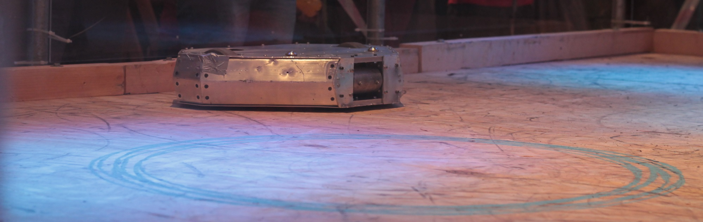

Chewie
Chewie MRK III is a lean mean machine capable of producing a ridiculous amount of torque. Its main weapon is itself, but now a high speed drum has been fitted for it to be more offensive.
Specifications
- 1.4 horsepower DC motors
- 2x 5” wheels accessible from top and bottom
- 5 Amp hour main battery
- Aluminium-wood chassis
So what makes the robot so awesome?
We use two NPC 24V DC brush-motors (like the ones used to move wheelchairs with heavy grandmas) which are capable of producing 0.74 horsepower each at 4000 rotations per minute. To make this power useable we geared the drive down with a ratio 4 using stress-proof steel gears which are directly coupled to 5 inch rubber tires. This means that the robot can travel approximately at 40 km per hour. This comes with a great price since each drive including gears, mountings and wheels add up to 7 kg which is 41 % of the maximum allowed weight. On a side note, during testing we used to power the drive to the max and then suddenly change the direction of motion, the force produced from the change of momentum made the motors jump a couple of cm off the bench.
Power is nothing, without control. To control the robot we use a very expensive Vantec dual speed controller. It can handle up to 43 V DC and 60 Amp continuous and bursts of 160 Amp on each side. On a side note arc welding typically uses 100 to 200 A at 20 V DC which is right in the specifications of this speed controller, in fact once we had a “small” short circuit which ended up melting the gold plating and some of the rest of our specialised high current connectors which damaged a very expensive battery.
One of the main problems in mobile units is a source of energy. The main options for a DC supply are Lithium Polymer batteries which unfortunately are still expensive and have a relatively good energy density i.e. how many Ampere hours it can store in a kilogram. The latest electric vehicles are equipped with the same technology. We when for a 5 Amp hour Turnigy six cell (22.2 V) LiPo battery thanks to a recommendation from a competitor. Apart from destroying each other’s robots we help out as well.
For control we opted for the 2.4 GHz Industrial, Scientific and Medical (ISM) radio band which gives us more bandwidth than the typical RF frequencies. In layman terms it’s the same magic which WiFi and Microwave ovens uses to let you watch kitty videos on YouTube and heat up your food. The technology which we utilised takes care of hopping into unused frequencies (Spread-Spectrum) thus making sure we have a reliable and stable connection to the robot and if anything fails it would revert the robot to its default values being everything off.